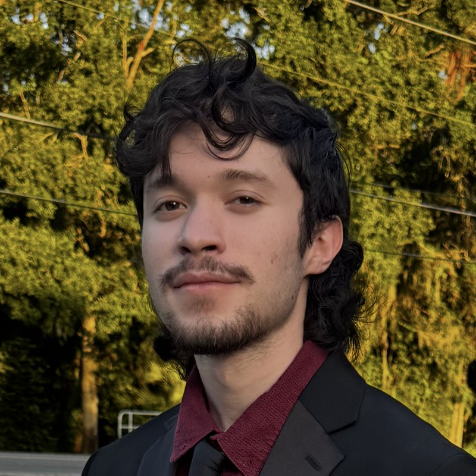

Hi, I'm Itzel.
Information Technology student at the University of Central Florida and a network technician in Orlando.
About me
I'm working toward a Bachelor of Science in Information Technology at UCF, with graduation planned for Summer 2027. Before UCF, I completed my early coursework at Valencia College.
I currently work as a Technician at Smart City Networks, where I support network and connectivity services in a live venue environment. My interest in technology started well before college: in high school I repaired hardware, built PCs, and did component-level soldering, and that hands-on background still shapes how I approach problems today.
I hold the CompTIA A+ certification and am currently studying for Network+ and Security+, with the Cisco CCNA as a longer-term goal.
Areas of interest
The parts of IT I enjoy most are the ones where the physical layer meets the logical one: networking and infrastructure, enterprise Wi-Fi and authentication, Windows Server and Active Directory, and endpoint support. Some of the work I've done so far includes building a Windows Server 2022 Active Directory domain across multiple virtual machines, analyzing network traffic with Wireshark, and troubleshooting WPA2-Enterprise and RADIUS authentication issues on client devices.
Outside of school and work, I spend time modding and repairing game hardware and doing bird and event photography.
Contact
Email: it193378@ucf.edu
LinkedIn: linkedin.com/in/itzelbracho